← Seriler
Yaprağı düşmüş ağaçlar suya düşer. Sis, gökyüzü ile toprağı ayırır; doğa burada sessiz ama kalabalık bir korodur.
17 kare
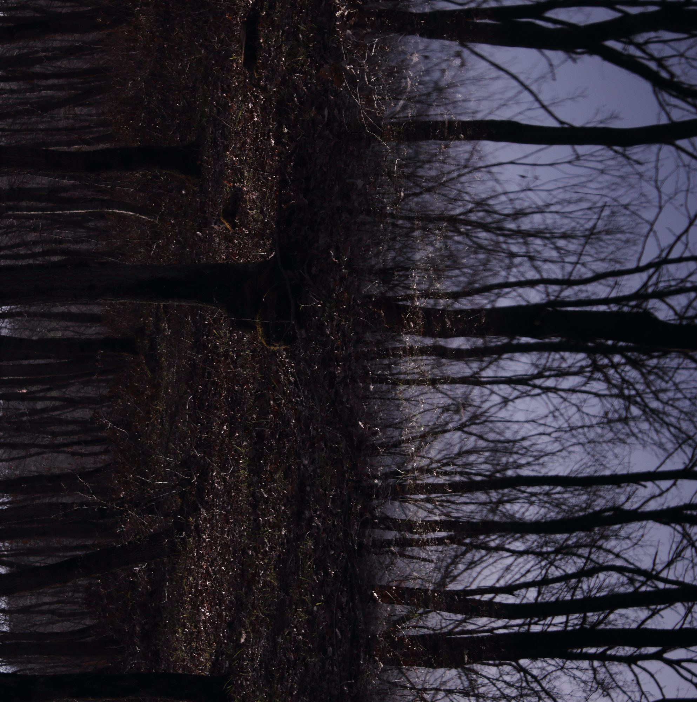
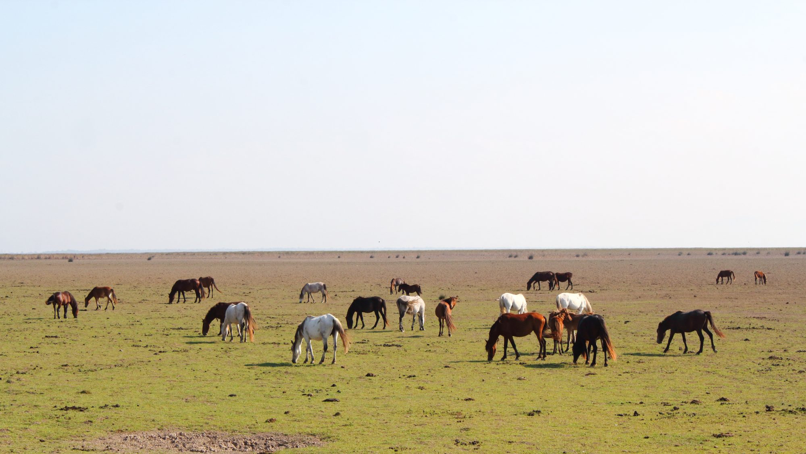
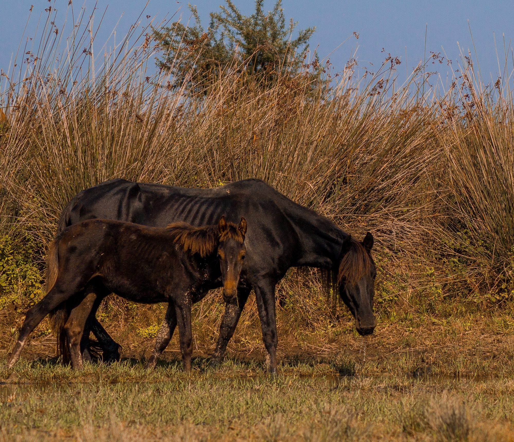
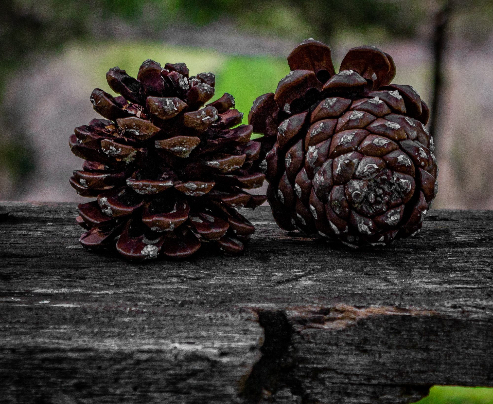
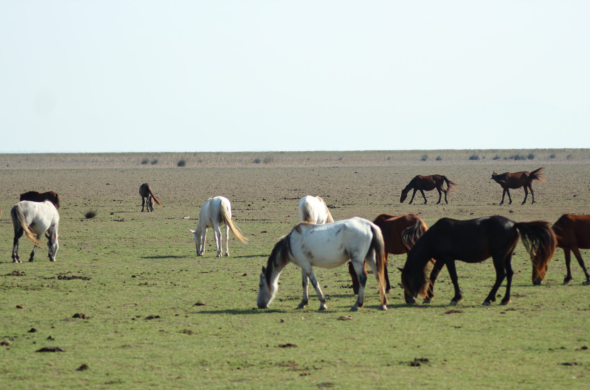
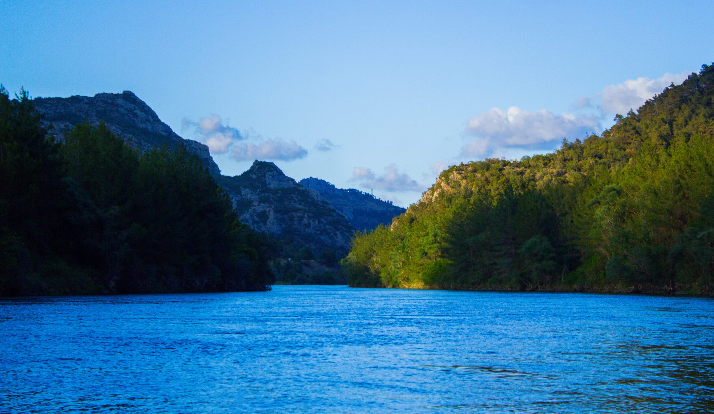
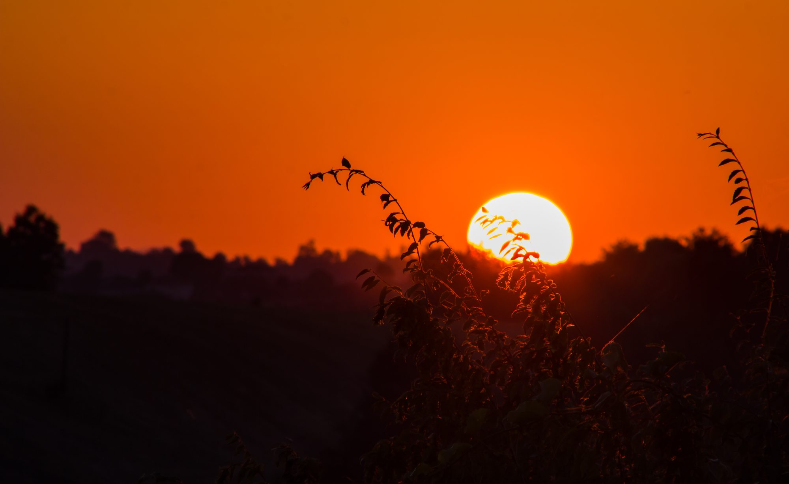
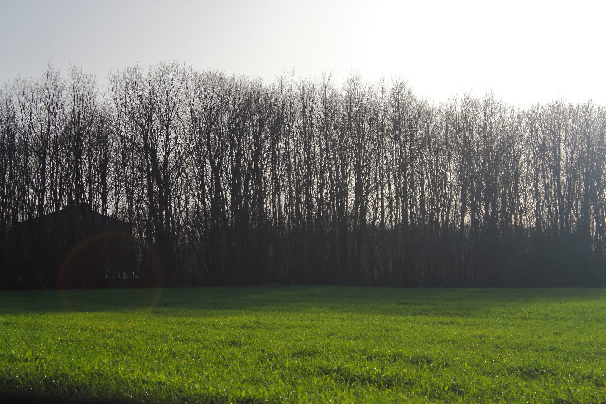
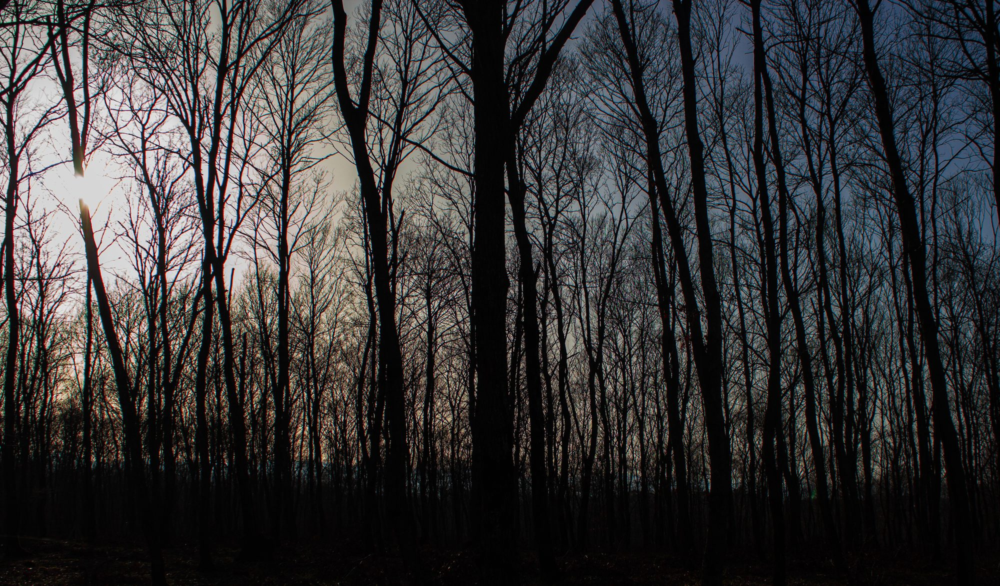
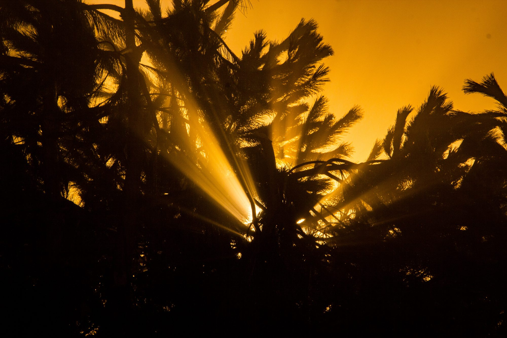
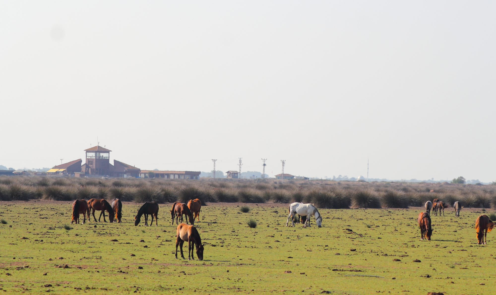
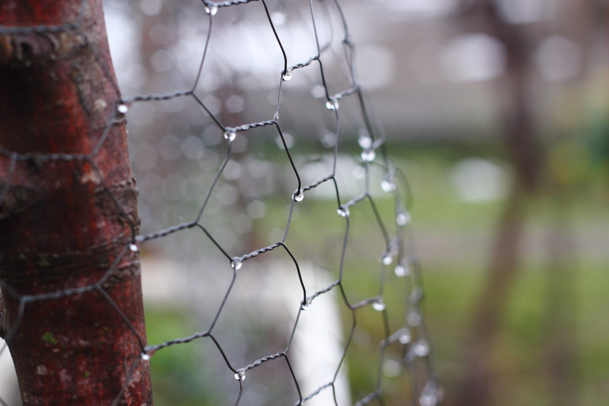
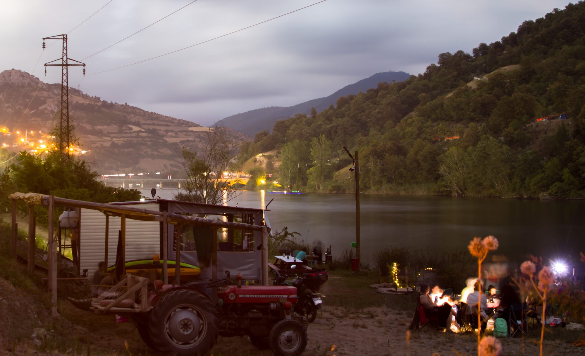
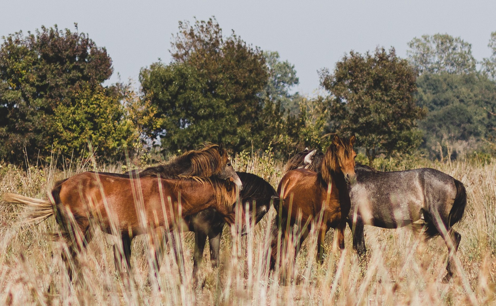
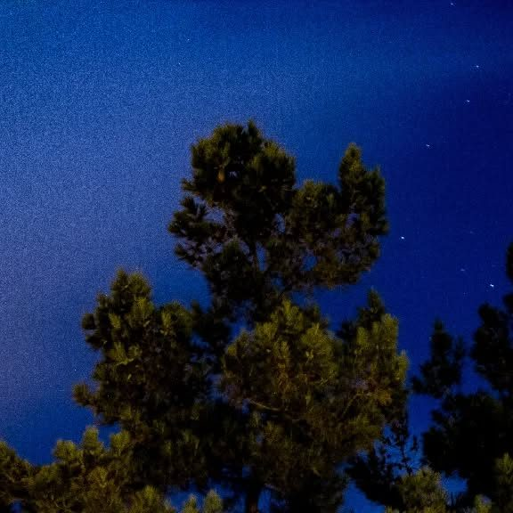
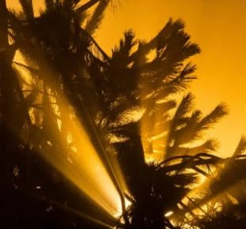
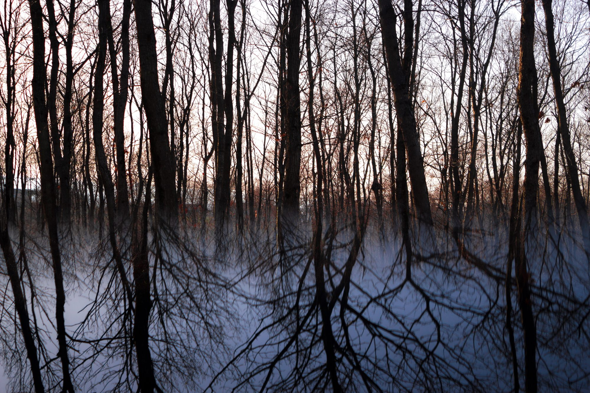
Diğer seriler
Deniz & Işık · Sokak & İnsan · Gece · Taş & Yapı